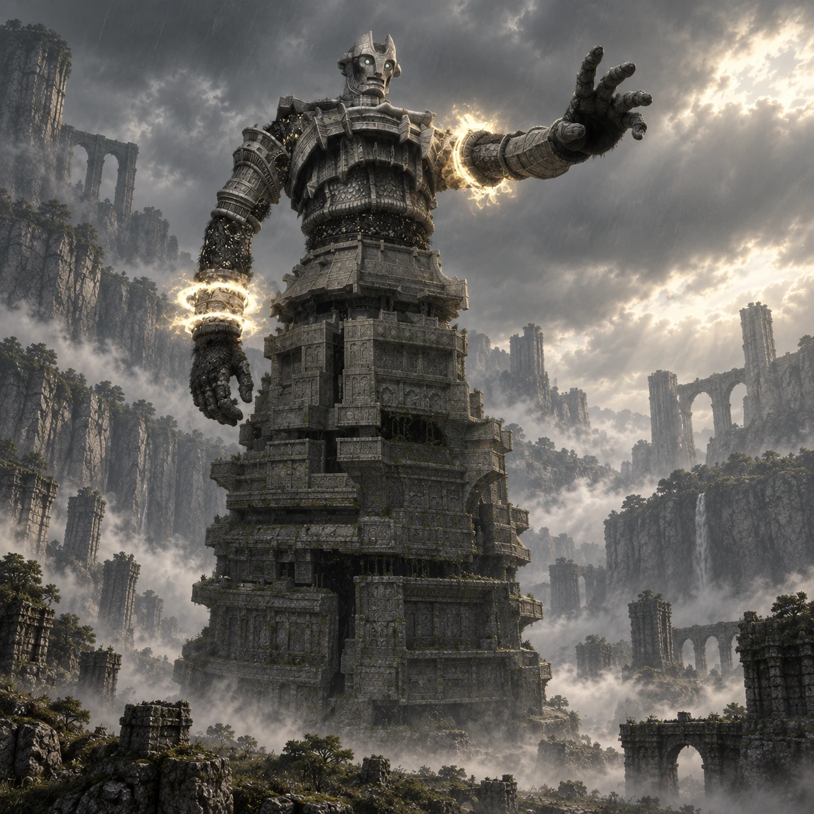

Dois nomes, duas origens
“Evis” é um nome de desenvolvimento. “Malus” é o nome popular entre os fãs, não um nome próprio apresentado durante o jogo.

Colosso 16 · Terras Proibidas
Uma última silhueta sob a tempestade.
No extremo sul, Malus se ergue como uma torre diante de Wander. O último encontro reúne distância, abrigo e escalada em uma paisagem tomada pela chuva.
Conheça o gigante01 / O gigante
A base larga se organiza em camadas de pedra, como uma torre. Acima dela, o tronco humanoide, os braços longos e as mãos enormes dão movimento à estrutura.
Malus permanece fixo no lugar, mas alcança grandes distâncias com seus projéteis. A aproximação e a subida formam etapas distintas de um mesmo encontro.
*A medida indicada segue o guia Vandal, citado nas fontes. Os tamanhos variam entre fontes e escalas; esta é uma referência aproximada de altura, não uma medida oficial confirmada.
02 / O caminho
Siga para o extremo sul do mapa, contornando as montanhas até o grande portão. Essa passagem só fica disponível após os quinze encontros anteriores.
A partir do portão, continue pelo percurso que sobe até a região elevada. A ficha preserva os acontecimentos desse caminho para quem ainda não chegou até aqui.
Abrir mapa das Terras Proibidas03 / Um olhar mais atento
“Evis” é um nome de desenvolvimento. “Malus” é o nome popular entre os fãs, não um nome próprio apresentado durante o jogo.
Malus não caminha pela arena. A parte inferior funciona como uma grande construção que precisa ser escalada.
A faixa “Demise of the Ritual” acompanha a batalha, dando ao cenário uma atmosfera diferente dos confrontos anteriores.
04 / O encontro
Algumas pistas para começar, deixando a descoberta da luta com você.
Dicas gerais para o modo Normal. A ficha não detalha todos os pontos vitais nem o desfecho do confronto.
Ficha baseada em registros da comunidade e guias de jogo. A arte é uma interpretação visual, não uma captura do jogo.